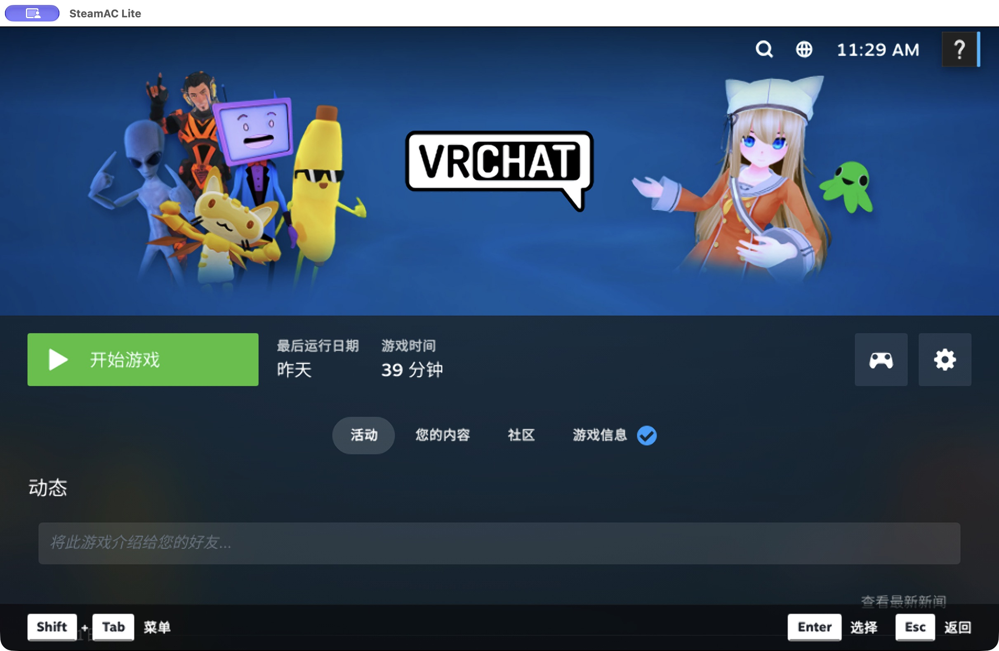
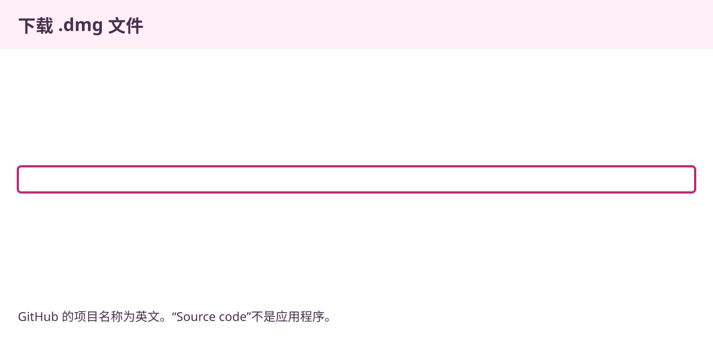
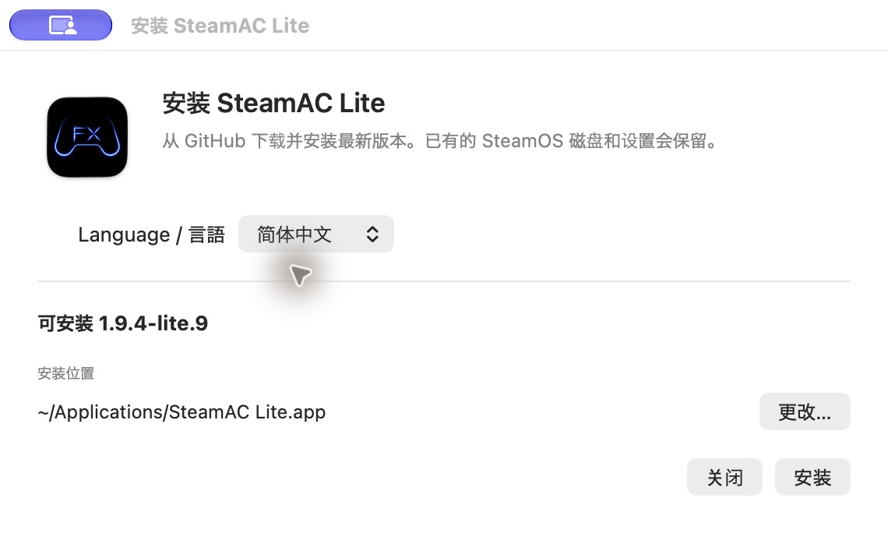
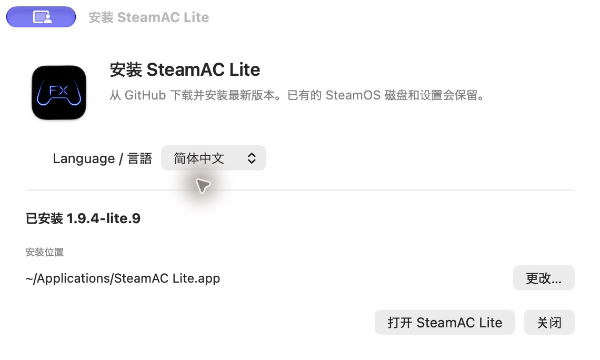
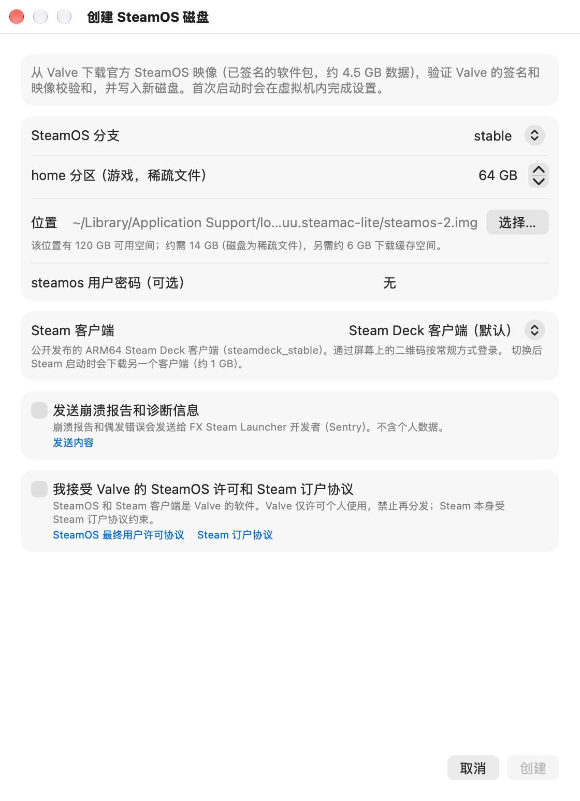
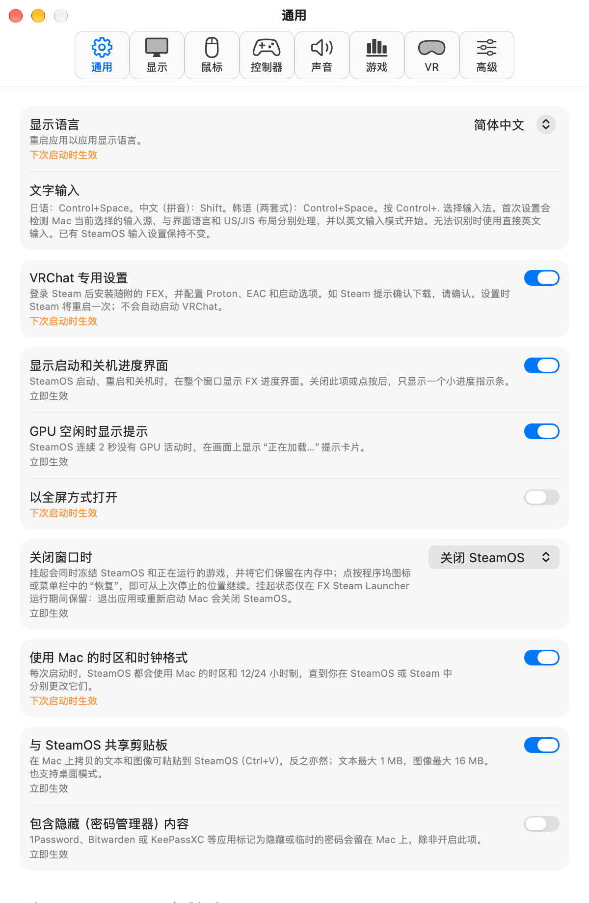
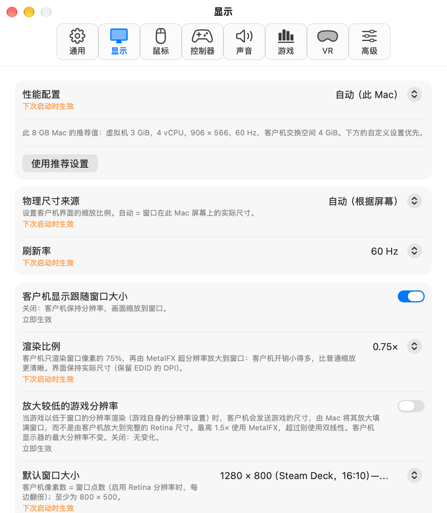

放大截图 ↗开始之前
准备事项
- Mac
- Apple Silicon（M1 或更新芯片）
macOS 15.5 或更高版本 · 至少 8 GB 内存 - 可用空间
- 初始设置约需 20 GB
另需预留游戏和交换文件的空间 - 网络与账号
- 用于下载 SteamOS 和游戏的网络
你自己的 Steam 账号
不支持 Intel Mac。steamac Lite 在 Mac 上的虚拟机中运行 SteamOS。首次为 8 GB 配置创建交换文件时，Mac 和 SteamOS 磁盘上各需至少 8 GiB 可用空间。
下载应用
下载 DMG
从 GitHub 直接下载时，请使用下方的 DMG。从 BOOTH 下载时，请按下方小节的步骤操作。
点击“下载 Mac 版应用”。如果从 GitHub Release 页面下载，请展开 Assets，选择以 .dmg 结尾的文件。
SteamAC-Lite-1.9.4-lite.14-macos-arm64.dmg
下载 Mac 版应用

放大截图 ↗从 BOOTH 下载时
BOOTH 提供小型在线安装器。安装时会从 GitHub 获取最新版应用，需要互联网连接。
打开 BOOTH 商品页面 ↗- 下载安装器 ZIP
在商品页面点击 無料ダウンロード（免费下载），保存安装器 ZIP 文件。
- 解压 ZIP 并打开安装器
双击 ZIP 解压，打开其中的 Install SteamAC Lite.app。确认显示语言和安装位置。点击「更改…」可选择其他文件夹。

放大截图 ↗中文安装器。确认语言和安装位置后，点击「安装」。 - 点击「安装」并等待完成
安装器会下载并验证最新版应用，然后完成安装。无需打开 DMG 或将应用拖入文件夹。

放大截图 ↗安装完成。点击「打开 steamac Lite」继续使用应用。 - 点击「打开 steamac Lite」
应用打开后，继续下方的显示语言设置。SteamOS 和游戏随后在应用中下载。


如果已安装最新版，无需重复下载即可打开应用。已有的 SteamOS 磁盘和设置会保留。
此实验版本未经 Apple 公证。请确认下载来源，并按照 Apple 关于安全打开应用的说明自行授权。
继续第 03 步：选择显示语言 →安装到 Mac
安装应用
打开下载的 DMG，再打开其中的 steamac Lite。点击“安装并打开”，应用会复制到“应用程序”文件夹并启动。也可以按下图将应用拖入 Applications 文件夹。
 放大截图 ↗
放大截图 ↗首次打开时出现 macOS 确认提示
此实验版本未经 Apple 公证。请确认下载来源，并按照 Apple 关于安全打开应用的说明自行授权。
应用显示语言
选择“简体中文”
首次打开 steamac Lite 时会出现 “表示言語を選択 / Choose a language”。选择 简体中文，然后点击 Continue（继续）。
应用的设置和菜单将显示为简体中文。使用新 SteamOS 磁盘时，Steam 也会从首次启动起使用简体中文。
Steam 会保留已有语言设置。可以在 Steam 的设置中更改。
出现提示时，选择“允许使用麦克风…”，并在 macOS 确认框中允许访问。如果权限被拒绝，请选择“打开麦克风设置…”。如果更新后麦克风无法使用，可尝试将此应用的麦克风权限关闭后重新开启。也可以在应用的“设置 → 声音”中查看权限状态。
准备运行 Steam 的环境
创建 SteamOS 磁盘
选择 Create New Disk…（新建磁盘…）。如果不确定如何选择，可以保留默认分支和 Steam 客户端。确认游戏存储容量和保存位置后继续。


放大截图 ↗在此界面确认以下内容
- 游戏存储容量
home 分区用于保存游戏等数据。截图以 64 GB 为例。 - 使用条款
阅读条款。如果同意，请勾选复选框并点击 “创建”。 - 等待下载
SteamOS 的准备和 Steam 的首次下载会自动进行。
也可以选择已有磁盘。如需保留原环境进行测试，请先关闭 SteamOS，再复制磁盘并选择副本。
FEX、Proton 与启动选项
完成 VRChat 专用设置
首次设置界面默认启用 VRChat 专用设置。之后也可以在 设置… → 通用中查看。


放大截图 ↗- 登录 Steam
在 Steam 界面登录你自己的账号。请自行输入密码并完成 Steam Guard 验证。
- 确认安装
应用会依次准备 FEX-Emu、Proton Experimental 和 Proton EasyAntiCheat Runtime。Steam 出现确认提示时，请检查内容并确认安装。
- 等待设置完成
下载完成后，应用会执行附加设置并重启一次 Steam。出现设置完成的提示后，即可继续下一步。
应用会安装兼容的 FEX，并为 VRChat 指定 Proton 和启动选项。登录和 Steam 的确认界面仍需自行操作。VRChat 不会自动启动。
安装 VRChat
在 Steam 中安装 VRChat
在 Steam 中搜索并安装 VRChat。下载完成后，点击 开始游戏自行启动。

VRChat 的自动设置不保证其他游戏也能运行。游戏购买和使用条款的确认请在各自的服务中完成。
日语、中文和韩语输入
应用根据 Mac 物理键盘自动识别 US/JIS 布局。无需额外下载即可使用日语、中文拼音和韩语两套式输入。
Control＋Space
Space转换Enter确认
首次设置会检测 Mac 当前选择的输入源，与界面语言和 US/JIS 布局分别处理。ABC 或 US 使用直接英文输入；支持的日语、拼音和韩语两套式输入源使用对应输入法，并以英文模式开始。无法识别时使用直接英文输入。先按 Control+. 选择输入法，再按 Shift 切换中英文，或按 Control+Space 切换日语／韩语与英文。已有 SteamOS 输入设置保持不变。日语输入支持 JIS 的“かな”和“英数”键。更换外接键盘后，需重新启动应用以再次识别布局。
内存与分辨率设置
应用会根据内存容量和屏幕选择内存分配及分辨率。8 GB Mac 使用较低资源占用的默认设置，内存较大的 Mac 则使用更高分辨率。
可在 Settings… → Display → Performance profile（设置 → 显示 → 性能配置）中查看。手动选择的数值优先。
默认屏幕刷新率为 60 Hz，不保证游戏内达到 60 fps。设置更改会在应用下次启动时生效。
查看不同 Mac 配置的设置表（日语）↗
放大截图 ↗常见问题
8 GB 内存的 Mac 也能使用吗？
提供适合 8 GB Mac 的轻量配置。作者已在自己的 M1、8 GB 内存 Mac 上确认新建磁盘、VRChat 专用设置和 VRChat 的运行。尚未验证大型世界、复杂虚拟形象、长时间运行的稳定性以及所有 Mac 的兼容性。
Steam 没有显示为我需要的语言
已有磁盘会保留 Steam 的语言设置。请在 Steam 的设置中选择所需语言，并按照提示应用更改。使用 Lite.5 或更新版本创建新磁盘时，Steam 会使用应用首次设置时选择的语言。
需要手动指定 Proton 或输入启动选项吗？
启用 VRChat 专用设置后，应用会执行附加设置。Steam 登录及安装确认仍需自行操作。已有自定义设置不会未经确认就被覆盖。另有详细设置与恢复方法（日语）可供参考。
能保留原来的 SteamOS 环境吗？
创建新磁盘会得到独立于原磁盘的环境。选择原磁盘则会将设置应用到原磁盘。如需测试副本，请关闭 SteamOS 后再复制。不要在多个虚拟机中同时打开同一磁盘。
本指南使用什么环境验证？
于 2026 年 11 月 2 日在 Apple M1、8 GiB 内存、macOS 27.2 上确认。全新安装验证涵盖工具下载和附加设置完成，未启动 VRChat 本体。已公开验证记录与限制（日语）。
如何更新应用？
Lite.9 及更新版本会在应用内提示新版本。点击「更新」下载，再选择「安装并重新打开」即可应用更新。SteamOS 磁盘和设置会保留。Lite.8 及更早版本需要先通过本页的 DMG 手动更新一次。
下载 steamac Lite
无需编译或输入命令。